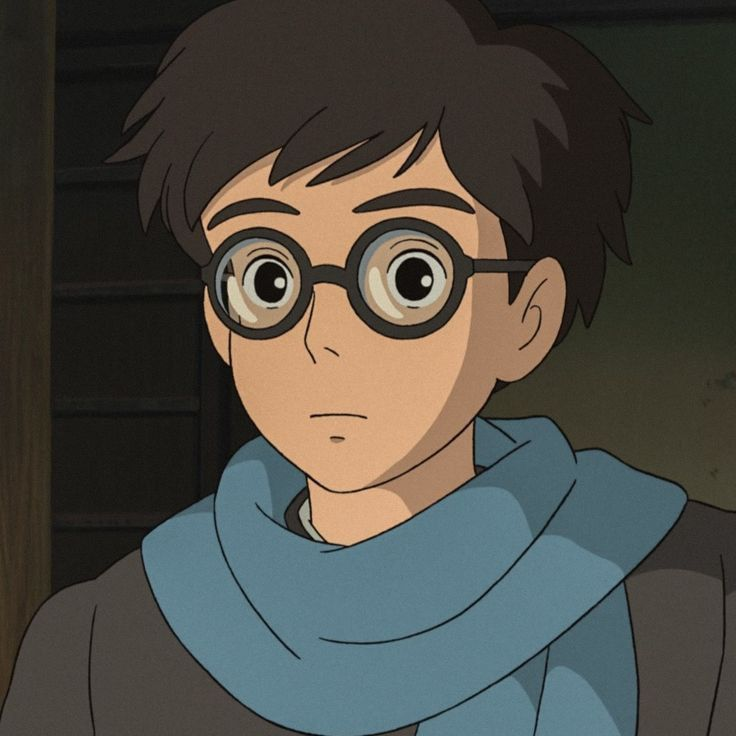
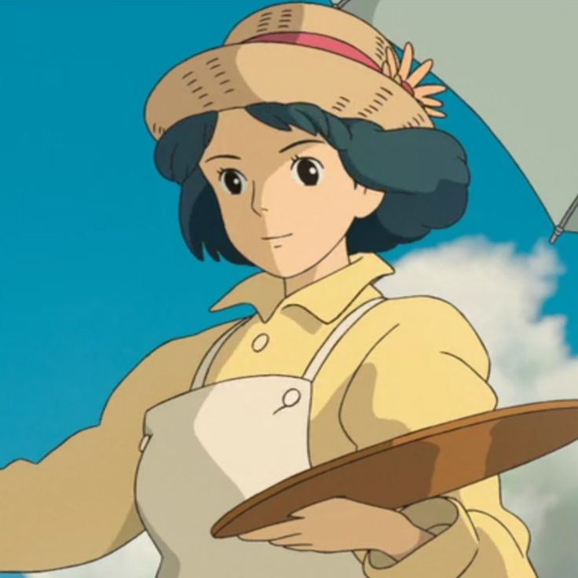
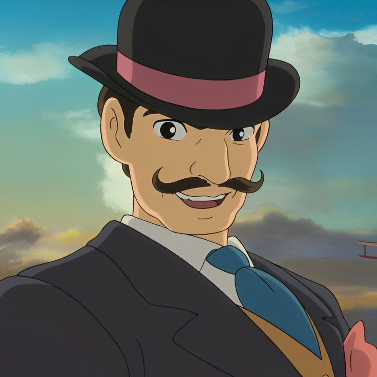

Jiro:
é um rapaz quieto e calmo.
Ele toma a linha de frente em diversas situações, característica vista na cena do trem,
na qual ajudou uma mulher que cortou a perna no meio de um terremoto em Tóquio,
e realmente se apresenta a ajudar os outros sem esperar prêmios em troca, o que aparece em sua
personalidade desde sua infância.

Nahoko Satomi:
é a mulher que Jiro conhece e com quem se apaixona. Ela é uma figura fundamental na
vida de Jiro, representando a fragilidade humana e o amor que contrasta com o mundo0
da engenharia e da guerra em que Jiro se mergulha.

Giovanni Battista Caproni:
é um engenheiro aeronáutico italiano e a grande inspiração de Jiro.
Ele aparece em momentos chave da história, principalmente nas visões e sonhos de Jiro,
atuando como um mentor espiritual para o protagonista.